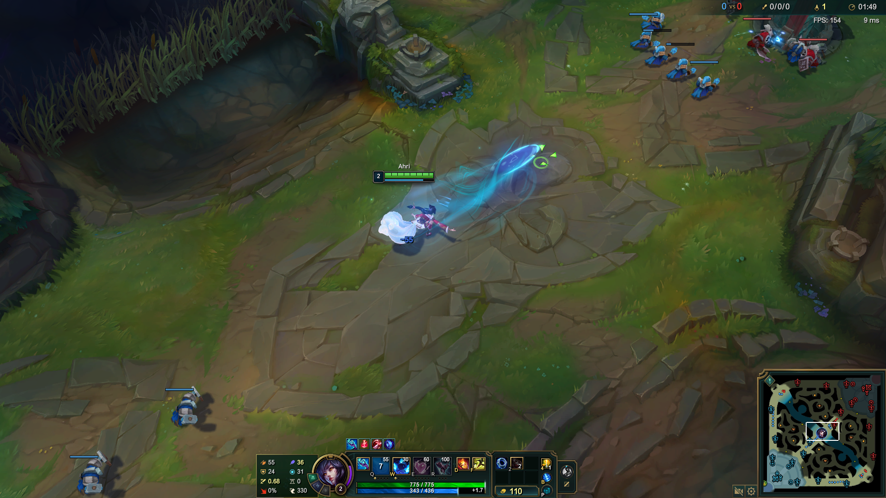
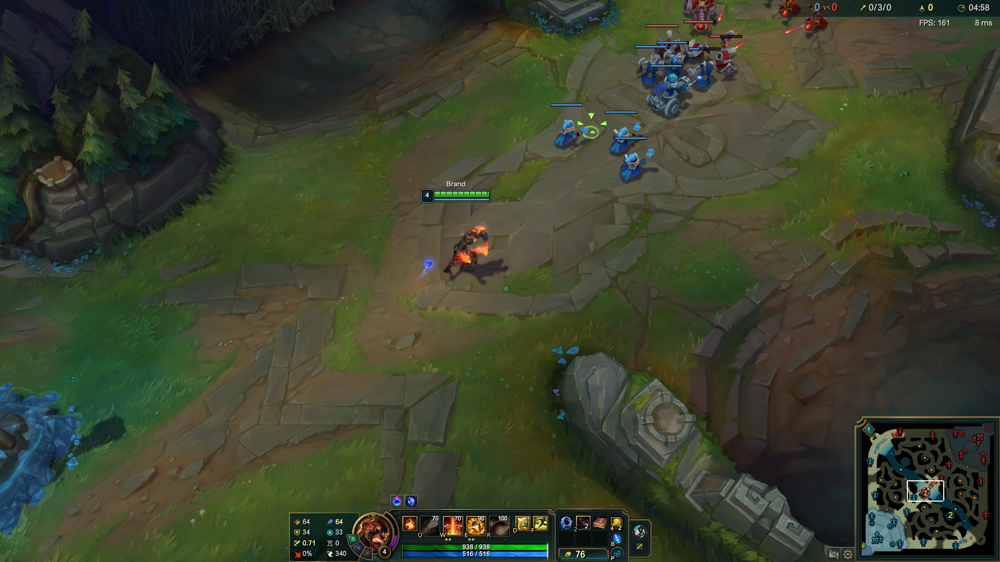
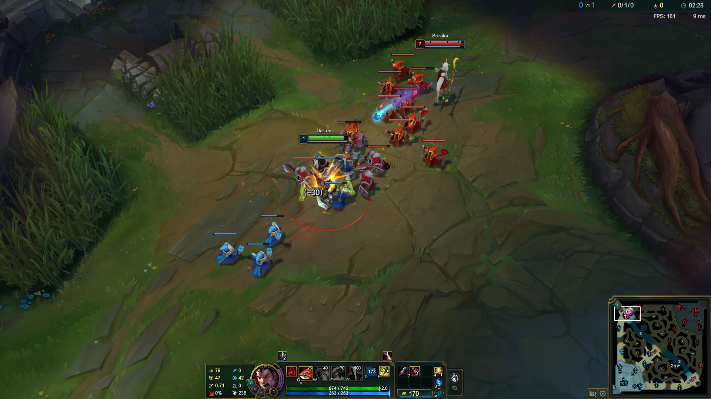
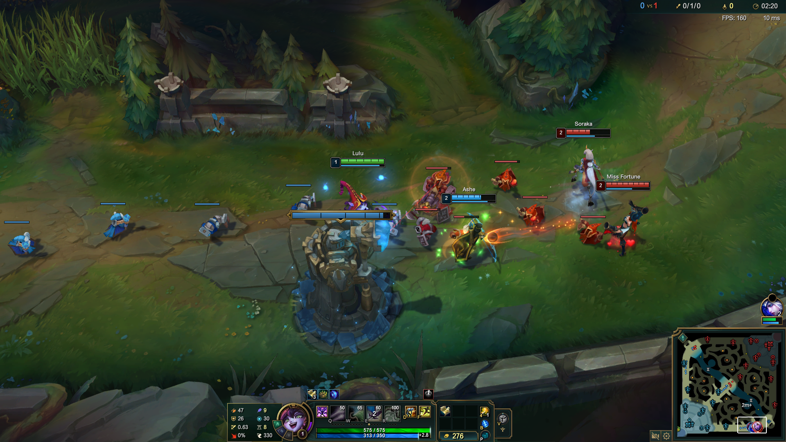
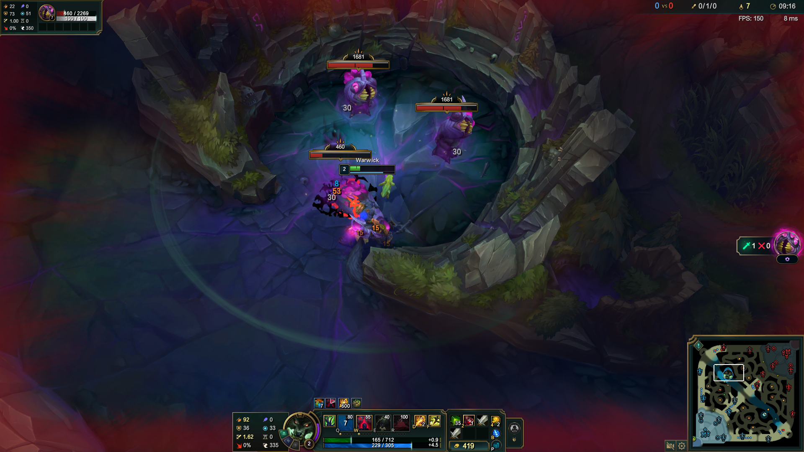
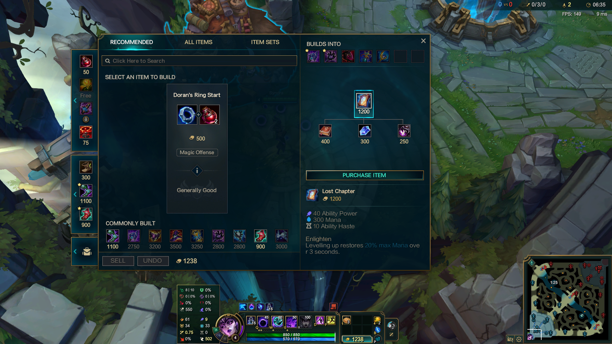

LOLPlay Task Showcase
36 champions. Six task families. 82 executable subgoal checks.
Representative Tasks
Screenshots from six benchmark tasks. Select a task to inspect its complete objective and evaluation checks.

Ahri
Reach 10 CS and level 4, with Q2, W1, E1, and R0.

Brand
Finish with at least 20 CS and 50% mana at the deadline.

Darius
Personally kill Soraka with no more than one death.

Lulu
Assist allied Ashe in a kill with no more than one death.

Warwick
Personally kill a Voidgrub, then destroy the top outer turret.

Syndra
Buy Lost Chapter and finish with it in the inventory.
Complete Task Catalog
Each task specifies a champion, a time budget, and a set of executable outcome checks. The current instruction-aligned suite contains 82 checks. Task success requires every required condition, including deadlines and event order.
Loading 36 tasks…
| Task | Champion | Family | Budget | Objective & evaluation |
|---|
No tasks match these filters. Try another champion, objective, or task family.
The task catalog could not be loaded. You can retry or download the complete definitions.
Download task JSON ↓Updated: 25 October 2026 · Download all task definitions (JSON) ↓